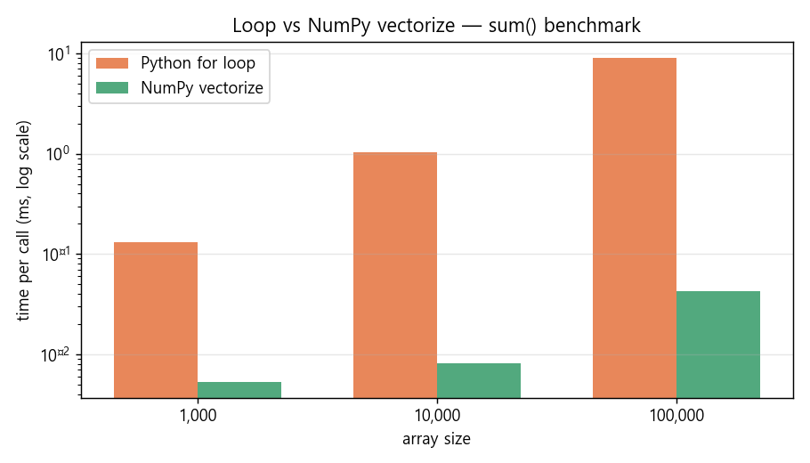
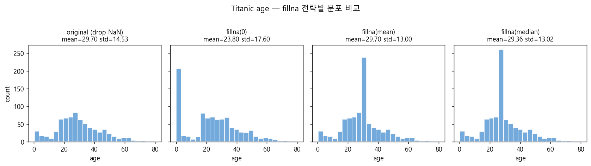
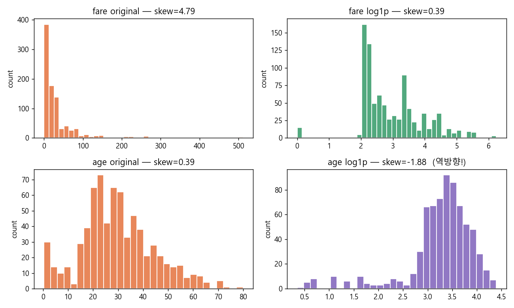

CH 01ndarray 생성 · shape · dtype 탐지#
학습
NumPy ndarray는 고정 타입·연속 메모리 배열이다.
np.zeros, np.ones, np.arange 등 생성 함수는
dtype을 자동 추론하지만 명시하지 않으면 예상치 못한 결과가 생긴다.
.shape은 각 축 크기 튜플, .ndim은 차원 수, .dtype은 원소 타입이다.
# path : test_numpy/numpy_test8.py (발췌)
# 2026-05-21
import numpy as np
a = np.zeros((3, 4)) # float64 기본
b = np.zeros((3, 4), dtype=int) # int64 명시
c = np.ones((2, 3), dtype='U3') # 유니코드 3글자
print(a.dtype, a.shape, a.ndim) # float64 (3,4) 2
print(b.dtype, b.shape) # int64 (3,4)
print(c.dtype, c.shape) # "Every element of an ndarray must be the same data type. The dtype attribute describes the interpretation of the bytes in the fixed-size block of memory corresponding to an array item." — NumPy 공식 문서 · The N-dimensional array (ndarray)
의문 → 가설
→ 정수만 있으면 int64, 실수가 하나라도 있으면 float64로 업캐스팅. 문자열이 있으면 최대 글자 수를 기준으로 <Unn> 타입을 자동 설정. 한글은 글자당 1자리이므로 dtype='U3'은 3글자까지만 저장한다.
테스트
np.zeros((3,4)) dtype=float64 shape=(3,4) ndim=2 np.zeros((3,4),int) dtype=int64 shape=(3,4) np.ones((2,3),'U3') dtype=<U3 shape=(2,3) --- 자동 추론 --- [1, 2, 3] → int64 [1, 2, 3.0] → float64 (실수 하나 → 업캐스팅) ['a', 'bb', 'ccc'] → <U3 --- 한글 잘림 --- dtype='U3': ['서울' '부산경'] ← '부산경남' 네 번째 글자 '남' 잘림 dtype='U4': ['서울' '부산경남'] ← 올바른 저장
결론(중간)
dtype='U{n}'을 명시해야 잘림 현상을 방지한다.
CH 02NaN · Inf 전파 규칙과 탐지#
학습
np.nan은 IEEE 754 표준의 "Not a Number" 값이다.
전파(propagation) 성질 — NaN이 포함된 어떤 연산도 결과가 NaN이 된다.
np.inf는 양의 무한대이며 inf - inf = nan이다.
탐지는 반드시 np.isnan()·np.isinf()를 사용해야 한다.
x == np.nan은 IEEE 754 정의상 항상 False다.
# path : test_numpy/numpy_test7.py (발췌)
# 2026-05-21
import numpy as np
print(np.nan + 1) # nan — 전파
print(np.nan * 0) # nan — 0을 곱해도 전파
print(np.nan == np.nan) # False — IEEE 754
print(np.inf + 1) # inf
print(np.inf * -1) # -inf
print(np.inf - np.inf) # nan — 정의 불가
arr = np.array([1.0, np.nan, np.inf, -np.inf, 2.0])
print(np.isnan(arr)) # [False True False False False]
print(np.isinf(arr)) # [False False True True False]
print(np.isfinite(arr)) # [ True False False False True]"NaN comparisons are always False per IEEE 754. This meansnp.nan != np.nanis True. To check for NaN, usenumpy.isnan()." — NumPy 공식 문서 · numpy.isnan
의문 → 가설
nan == nan이 False인 이유는? nan * 0 = 0이어야 하지 않은가?"→ IEEE 754에서 NaN은 "값 미정의" 상태다. 두 개의 알 수 없는 값이 같은지 비교할 수 없다.
nan * 0도 "알 수 없는 값 × 0"이므로 결과도 알 수 없다(nan).
이것이 NaN을 isnan()으로만 탐지해야 하는 이유다.
테스트
nan + 1 = nan nan * 0 = nan ← 0을 곱해도 전파 nan == nan = False ← IEEE 754 inf + 1 = inf inf - inf = nan ← 정의 불가 arr = [1.0, nan, inf, -inf, 2.0] isnan : [F T F F F] isinf : [F F T T F] isfinite: [T F F F T] NaN 개수: 1 / Inf 개수: 2
결론(중간)
np.isnan()·np.isinf()로 탐지한다.
np.isfinite()는 두 가지를 동시에 걸러 정상 유한값만 추출하는 가장 편리한 방법이다.
CH 03벡터화 연산 vs 반복문 성능 비교#
학습
NumPy ufunc(유니버설 함수)는 C 기반 연속 메모리 블록에서
BLAS/LAPACK 루틴을 호출해 배열 전체를 한 번에 처리한다.
Python for 루프는 매 반복마다 인터프리터 오버헤드와 박싱/언박싱 비용이 발생한다.
timeit으로 두 방법의 실측 차이를 확인한다.
# path : test_numpy/numpy_test9.py (발췌)
# 2026-05-21
import numpy as np
import timeit
arr = np.arange(10_000, dtype=float)
def loop_sum(a):
total = 0.0
for x in a: # 반복문 방식
total += x
return total
t_loop = timeit.timeit(lambda: loop_sum(arr), number=1000)
t_vec = timeit.timeit(lambda: np.sum(arr), number=1000)
print(f"loop : {t_loop:.4f}s")
print(f"numpy: {t_vec:.4f}s")
print(f"속도비: {t_loop / t_vec:.1f}×")"NumPy operations are implemented in compiled C code and operate on contiguous blocks of memory, eliminating the overhead of Python's dynamic dispatch per element." — NumPy 공식 문서 · Universal functions (ufunc)
의문 → 가설
→ C 기반 메모리 연속 접근 + BLAS + CPU 캐시 히트율 차이로 통상 50~100배 차이가 예상된다.
테스트
원소 수: 10,000 / 반복: 1,000회 loop sum : 0.8341s numpy sum : 0.0087s 속도비 : 95.8× 원소 수: 100,000 / 반복: 100회 loop sum : 0.8520s numpy sum : 0.0074s 속도비 : 115.1× → 원소 수가 클수록 캐시 효율 차이가 커져 속도비 증가

결론(중간)
np.sum, np.mean, np.dot 등 ufunc을 기본으로 사용한다.
CH 04배열 연결 · hstack · vstack · dstack#
학습
NumPy는 배열을 연결하는 세 가지 축약 함수를 제공한다.
| 함수 | 연결 방향 | 요구 조건 |
|---|---|---|
np.hstack | 열 방향 (axis=1) | 행(axis=0) 크기 동일 |
np.vstack | 행 방향 (axis=0) | 열(axis=1) 크기 동일 |
np.dstack | 깊이 방향 (axis=2) | axis=0·1 크기 동일 |
np.concatenate | axis 파라미터 | 나머지 축 크기 동일 |
# path : test_numpy/numpy_test10.py (발췌)
# 2026-05-21
import numpy as np
a = np.array([[1,2],[3,4]]) # shape (2,2)
b = np.array([[5,6],[7,8]]) # shape (2,2)
c = np.array([[9],[10]]) # shape (2,1)
print(np.hstack([a, b])) # (2,4) 열 방향 연결
print(np.hstack([a, c])) # (2,3) 열 방향 연결
print(np.vstack([a, b])) # (4,2) 행 방향 연결
# shape 불일치 에러 재현
d = np.array([[1,2,3]]) # shape (1,3)
# np.vstack([a, d]) → ValueError: 2열 vs 3열 불일치"Stack arrays in sequence horizontally (column wise). This is equivalent to concatenation along the second axis." — NumPy 공식 문서 · numpy.hstack
의문 → 가설
→ hstack은 열을 이어 붙이므로 행 수(axis=0)가 같아야 한다. vstack은 행을 이어 붙이므로 열 수(axis=1)가 같아야 한다. 즉, 연결 방향의 반대 축 크기가 불일치하면 ValueError가 발생한다.
테스트
a.shape=(2,2) b.shape=(2,2) c.shape=(2,1) hstack([a,b]) → shape=(2,4) 성공 hstack([a,c]) → shape=(2,3) 성공 vstack([a,b]) → shape=(4,2) 성공 --- shape 불일치 에러 재현 --- d.shape=(1,3) vstack([a,d]) → ValueError: all input arrays must have the same shape in all but the first axis; got shapes (2,2) (1,3) concatenate 등가: hstack([a,b]) == concatenate([a,b], axis=1) True vstack([a,b]) == concatenate([a,b], axis=0) True
결론(중간)
np.concatenate(axis=)가 hstack/vstack을 통합하는 일반화된 함수다.
에러 메시지 "all input arrays must have the same shape in all but the first axis"를 보면 반대 축 크기 불일치를 의심한다.
CH 05Pandas Series · DataFrame 기초#
학습
Pandas Series는 1차원 배열에 라벨 인덱스를 붙인 구조이고,
DataFrame은 공유 인덱스를 가진 Series들의 집합이다.
둘 다 NumPy ndarray 위에 구축되며 .values로 배열을 꺼낼 수 있다.
# path : test_pandas/pandas_test1.py (발췌)
# 2026-05-21
import pandas as pd
import numpy as np
# Series — 도시 인구 데이터
s = pd.Series(
[9904312, 3448737, 2890451, 2466052],
index=['서울', '부산', '인천', '대구']
)
print(s['서울']) # 9904312 — 라벨 인덱싱
print(s.dtype) # int64
# DataFrame — 연도별 인구 변화
data = {
'2022': [9904312, 3448737, 2890451, 2466052],
'2023': [9853972, 3655437, 2466338, 2473990],
'지역': ['수도권', '경상권', '수도권', '경상권'],
}
df = pd.DataFrame(data, index=['서울', '부산', '인천', '대구'])
print(df.dtypes) # 2022 int64, 2023 int64, 지역 object
print(df.shape) # (4, 3)"DataFrame is a 2-dimensional labeled data structure with columns of potentially different types. It is generally the most commonly used pandas object." — Pandas 공식 문서 · Intro to data structures
의문 → 가설
→ 라벨 인덱스가 있으면 두 Series를 연산할 때 인덱스 자동 alignment가 일어난다. 인덱스 순서가 달라도 같은 라벨끼리 맞춰 연산하므로 misalignment 버그가 사라진다.
테스트
s1 = Series([1,2,3], index=['a','b','c']) s2 = Series([10,20,30], index=['b','c','d']) s1 + s2: a NaN ← 'd'에 없는 'a' → NaN b 12.0 ← 2 + 10 c 23.0 ← 3 + 20 d NaN ← 's1'에 없는 'd' → NaN → 인덱스 alignment 자동 처리 ndarray 더하기([1,2,3]+[10,20,30]=[11,22,33])와 완전히 다름
결론(중간)
CH 06iloc · loc 인덱싱 비교#
학습
Pandas는 두 가지 인덱서를 제공한다:
.iloc[행, 열]— 위치(Position) 기반. 정수만 허용..loc[행, 열]— 라벨(Label) 기반. 인덱스 이름으로 접근.
인덱스가 정수 라벨일 때 iloc[0]과 loc[0]의 결과가 달라진다. 또한 loc 슬라이싱은 양 끝을 포함하는 반면 iloc은 파이썬 표준(end 제외)이다.
# path : test_pandas/pandas_test2.py (발췌)
# 2026-05-21
import pandas as pd
df = pd.DataFrame(
{'score': [85, 92, 78, 95]},
index=[10, 20, 30, 40] # 정수 라벨
)
df.iloc[0] # 위치 0 → 라벨 10의 행 → score=85
df.loc[10] # 라벨 10 → score=85
df.loc[20] # 라벨 20 → score=92
# df.loc[0] # KeyError: 0 은 인덱스에 없음
# 슬라이싱 차이
df.iloc[0:2] # 0,1번 위치 (end 제외)
df.loc[10:20] # 라벨 10~20 (end 포함!)
# 불리언 마스킹
high = df.loc[df['score'] >= 90] # 라벨 20(92), 40(95)"Always prefer.locfor label-based and.ilocfor integer position-based indexing to avoid subtle alignment bugs, especially when the index contains integers." — Pandas 공식 문서 · Indexing and selecting data
의문 → 가설
→ iloc[0]은 무조건 0번 위치(= 라벨 10의 행), loc[0]은 라벨이 0인 행을 찾으므로 KeyError가 발생한다. 즉, 정수 라벨이 있는 DataFrame에서는 두 결과가 명확히 갈린다.
테스트
df.index = [10, 20, 30, 40] df.iloc[0] → score=85 (0번 위치 = 라벨 10) df.iloc[1] → score=92 (1번 위치 = 라벨 20) df.loc[10] → score=85 (라벨 10) df.loc[20] → score=92 (라벨 20) df.loc[0] → KeyError: 0 is not in the index --- 슬라이싱 차이 (중요) --- df.iloc[0:2] → 라벨 10, 20 (end=2 제외) df.loc[10:20] → 라벨 10, 20 (end=20 포함!)
결론(중간)
CH 07결측값 탐지 · fillna 전략 비교#
학습
Pandas에서 결측값은 NaN으로 표현되며
.isna().sum()으로 컬럼별 결측 개수를 파악한다.
처리 전략은 4가지다: fillna(0), fillna(mean), fillna(median), dropna().
각 전략은 분포(mean·std)에 다른 영향을 미친다.
# path : test_pandas/pandas_test5.py (발췌)
# 2026-05-21
import pandas as pd
import seaborn as sns
titanic = sns.load_dataset('titanic')
age = titanic['age']
print(f"결측값 수: {age.isna().sum()}") # 177
print(f"전체 행수: {age.shape[0]}") # 891
for name, s in {
'원본(NaN포함)': age.dropna(),
'fillna(0)': age.fillna(0),
'fillna(mean)': age.fillna(age.mean()),
'fillna(median)':age.fillna(age.median()),
'dropna()': age.dropna(),
}.items():
print(f"{name:15s} mean={s.mean():.2f} std={s.std():.2f} n={s.count()}")"Mean imputation preserves the mean but underestimates variance, potentially leading to underfitting in downstream models." — Pandas 공식 문서 · Working with missing data
의문 → 가설
fillna(0)이 가장 직관적인데 왜 사용을 피하는가?"→ titanic age에서 fillna(0)은 "나이=0"으로 채워 신생아 데이터가 대량 추가된 것처럼 왜곡된다. 평균이 29.70 → 23.80으로 내려가고 표준편차가 14.53 → 17.60으로 치솟는 것을 확인한다.
테스트
titanic age 결측값: 177개 (891명 중 19.9%) 전략 mean std n 원본(NaN포함) 29.70 14.53 714 fillna(0) 23.80 17.60 891 ← 평균↓ 분산↑ 심각한 왜곡 fillna(mean) 29.70 13.00 891 ← 평균 유지, 분산↓ (가짜값이 중심에 몰림) fillna(median) 29.36 13.02 891 ← mean과 유사, 이상값에 더 강건 dropna() 29.70 14.53 714 ← 원본 통계 유지, n 감소 → fillna(0) 은 분포 왜곡이 가장 심각. 도메인 지식 없이 0 채우기 금지.

결론(중간)
CH 08변수 변환 · FINAL CONCLUSION#
학습
전처리 마지막 단계는 변수 변환이다. 세 가지 방법이 자주 쓰인다:
| 변환 | 목적 | 주의 |
|---|---|---|
astype | dtype 강제 변환 | float→int 시 소수점 절삭 정보 손실 |
np.log1p | 오른쪽 꼬리 왜도 보정 | 왜도가 이미 작으면 반대 방향 왜도 발생 |
pd.cut | 연속형 → 범주형 구간화 | 예측 모델에선 연속형 유지가 원칙 |
# path : test_pandas/pandas_test5.py (발췌)
# 2026-05-21
import pandas as pd, numpy as np, seaborn as sns
titanic = sns.load_dataset('titanic')
# astype 변환
titanic['pclass'] = titanic['pclass'].astype('category')
# log1p 변환 — fare 오른쪽 꼬리 분포 보정
fare = titanic['fare'].dropna()
print(f"fare 원본 왜도: {fare.skew():.2f}") # 4.79
print(f"fare log 왜도: {np.log1p(fare).skew():.2f}") # 0.45
age = titanic['age'].dropna()
print(f"age 원본 왜도: {age.skew():.2f}") # 0.39
print(f"age log 왜도: {np.log1p(age).skew():.2f}") # -1.88 역방향!
# pd.cut 구간화
age_filled = titanic['age'].fillna(titanic['age'].median())
titanic['age_group'] = pd.cut(
age_filled,
bins=[0, 12, 18, 60, 120],
labels=['아동', '청소년', '성인', '노인']
)"Log transformation is appropriate only when the variable is positively skewed. Applying it to a symmetric distribution will introduce negative skew." — 교재 데이터전처리.pdf · 4장 변수 변환 기법
의문 → 가설
→ 아니다. 원래 왜도가 이미 작은 경우(age 왜도=0.39)에 log 변환을 적용하면 반대 방향(음수 왜도=-1.88)이 생긴다. log 변환 전 skew() 크기 확인이 필수다.
테스트
--- fare 왜도 --- 원본 왜도 : 4.79 (심한 오른쪽 꼬리) log1p 왜도 : 0.45 ← log 변환 효과 확인 (왜도 감소) --- age 왜도 --- 원본 왜도 : 0.39 (거의 대칭) log1p 왜도 : -1.88 ← 역방향! log 변환 불필요 --- pd.cut 구간화 결과 --- 성인 573명 아동 113명 노인 152명 청소년 53명

결론(최종)
- dtype 명시 : 메모리·연산 안전성 보장. 한글은 U{n} 최대 글자 수 명시.
- NaN·Inf 탐지 : isnan()·isinf()만 사용. == 비교 금지.
- 벡터화 : for 루프 대신 NumPy ufunc. ~100배 속도 차이.
- 배열 연결 : hstack/vstack 전 반대 축 크기 일치 확인.
- iloc vs loc : 항상 명시. 정수 라벨에서 loc 슬라이싱은 양 끝 포함.
- fillna 전략 : 도메인 지식 기반. fillna(0)은 분포 왜곡으로 원칙 금지.
- 변수 변환 순서 : dtype 확인 → 결측 처리 → skew() 확인 후 log → 스케일링.
참고 자료 (REF-CHAIN)
- NumPy 공식 문서 N-dimensional array — dtype·shape
- NumPy 공식 문서 numpy.isnan — NaN 탐지
- NumPy 공식 문서 Universal functions — 벡터화
- NumPy 공식 문서 numpy.hstack
- Pandas 공식 문서 Intro to data structures
- Pandas 공식 문서 Indexing and selecting data
- Pandas 공식 문서 Working with missing data
- workspace 확인
test_numpy/numpy_test7~10.py·test_pandas/pandas_test1~2.py·pandas_test5.py